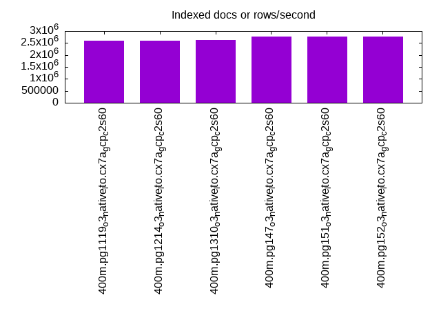
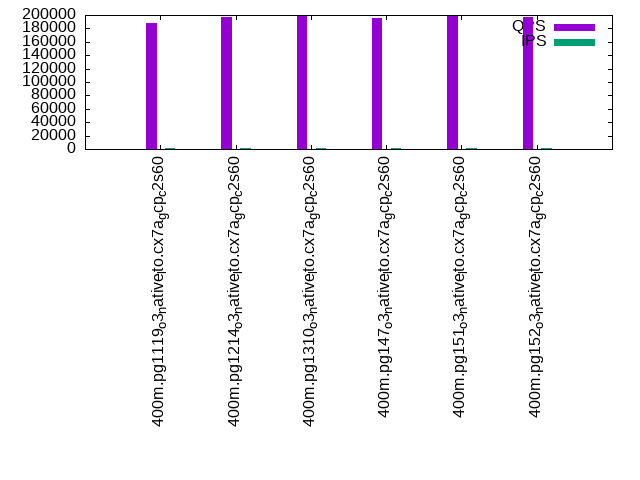

This is a report for the insert benchmark with 400M docs and 20 client(s). It is generated by scripts (bash, awk, sed) and Tufte might not be impressed. An overview of the insert benchmark is here and a short update is here. Below, by DBMS, I mean DBMS+version.config. An example is my8020.c10b40 where my means MySQL, 8020 is version 8.0.20 and c10b40 is the name for the configuration file.
The test server is c2-standard-60 from GCP with 30 cores, hyperthreads disabled, 240G RAM and 3T of NVMe (XFS with RAID0 over 8 devices). The benchmark was run with 20 clients and there were 1 or 2 connections per client (1 for queries, 1 for inserts). It uses 20 tables with a client per table. It loads 20M rows per table without secondary indexes, creates secondary indexes, loads another 20M rows per table then does 3 read+write tests for one hour each that do queries as fast as possible with 100, 500 and then 1000 writes/second/client concurrent with the queries. The database is cached by the storage engine and the only IO is for writes. Clients and the DBMS share one server. The per-database configs are in the per-database subdirectories here.
The tested DBMS are:
The numbers are inserts/s for l.i0 and l.i1, indexed docs (or rows) /s for l.x and queries/s for q*.2. The values are the average rate over the entire test for inserts (IPS) and queries (QPS). The range of values for IPS and QPS is split into 3 parts: bottom 25%, middle 50%, top 25%. Values in the bottom 25% have a red background, values in the top 25% have a green background and values in the middle have no color. A gray background is used for values that can be ignored because the DBMS did not sustain the target insert rate. Red backgrounds are not used when the minimum value is within 80% of the max value.
| dbms | l.i0 | l.x | l.i1 | q100.1 | q500.1 | q1000.1 |
|---|---|---|---|---|---|---|
| 400m.pg1119_o3_native_lto.cx7a_gcp_c2s60 | 1433692 | 2598052 | 415800 | 188675 | 192502 | 195348 |
| 400m.pg1214_o3_native_lto.cx7a_gcp_c2s60 | 1418440 | 2598052 | 414508 | 197253 | 200389 | 203676 |
| 400m.pg1310_o3_native_lto.cx7a_gcp_c2s60 | 1418440 | 2615033 | 407747 | 198065 | 200386 | 204291 |
| 400m.pg147_o3_native_lto.cx7a_gcp_c2s60 | 1413428 | 2759310 | 421496 | 196086 | 197693 | 201489 |
| 400m.pg151_o3_native_lto.cx7a_gcp_c2s60 | 1393728 | 2778472 | 416233 | 197942 | 200354 | 203691 |
| 400m.pg152_o3_native_lto.cx7a_gcp_c2s60 | 1398601 | 2759310 | 418410 | 197101 | 199559 | 203675 |
This table has relative throughput, throughput for the DBMS relative to the DBMS in the first line, using the absolute throughput from the previous table.
| dbms | l.i0 | l.x | l.i1 | q100.1 | q500.1 | q1000.1 |
|---|---|---|---|---|---|---|
| 400m.pg1119_o3_native_lto.cx7a_gcp_c2s60 | 1.00 | 1.00 | 1.00 | 1.00 | 1.00 | 1.00 |
| 400m.pg1214_o3_native_lto.cx7a_gcp_c2s60 | 0.99 | 1.00 | 1.00 | 1.05 | 1.04 | 1.04 |
| 400m.pg1310_o3_native_lto.cx7a_gcp_c2s60 | 0.99 | 1.01 | 0.98 | 1.05 | 1.04 | 1.05 |
| 400m.pg147_o3_native_lto.cx7a_gcp_c2s60 | 0.99 | 1.06 | 1.01 | 1.04 | 1.03 | 1.03 |
| 400m.pg151_o3_native_lto.cx7a_gcp_c2s60 | 0.97 | 1.07 | 1.00 | 1.05 | 1.04 | 1.04 |
| 400m.pg152_o3_native_lto.cx7a_gcp_c2s60 | 0.98 | 1.06 | 1.01 | 1.04 | 1.04 | 1.04 |
This lists the average rate of inserts/s for the tests that do inserts concurrent with queries. For such tests the query rate is listed in the table above. The read+write tests are setup so that the insert rate should match the target rate every second. Cells that are not at least 95% of the target have a red background to indicate a failure to satisfy the target.
| dbms | q100.1 | q500.1 | q1000.1 |
|---|---|---|---|
| pg1119_o3_native_lto.cx7a_gcp_c2s60 | 1976 | 9890 | 19769 |
| pg1214_o3_native_lto.cx7a_gcp_c2s60 | 1976 | 9885 | 19769 |
| pg1310_o3_native_lto.cx7a_gcp_c2s60 | 1976 | 9885 | 19769 |
| pg147_o3_native_lto.cx7a_gcp_c2s60 | 1976 | 9885 | 19769 |
| pg151_o3_native_lto.cx7a_gcp_c2s60 | 1976 | 9885 | 19769 |
| pg152_o3_native_lto.cx7a_gcp_c2s60 | 1976 | 9885 | 19769 |
| target | 2000 | 10000 | 20000 |
l.i0: load without secondary indexes. Graphs for performance per 1-second interval are here.
Average throughput:
Insert response time histogram: each cell has the percentage of responses that take <= the time in the header and max is the max response time in seconds. For the max column values in the top 25% of the range have a red background and in the bottom 25% of the range have a green background. The red background is not used when the min value is within 80% of the max value.
| dbms | 256us | 1ms | 4ms | 16ms | 64ms | 256ms | 1s | 4s | 16s | gt | max |
|---|---|---|---|---|---|---|---|---|---|---|---|
| pg1119_o3_native_lto.cx7a_gcp_c2s60 | 61.827 | 37.288 | 0.835 | 0.016 | 0.023 | 0.010 | nonzero | 1.234 | |||
| pg1214_o3_native_lto.cx7a_gcp_c2s60 | 59.680 | 39.487 | 0.781 | 0.020 | 0.024 | 0.007 | 0.496 | ||||
| pg1310_o3_native_lto.cx7a_gcp_c2s60 | 59.578 | 39.590 | 0.780 | 0.019 | 0.020 | 0.012 | 0.508 | ||||
| pg147_o3_native_lto.cx7a_gcp_c2s60 | 59.476 | 39.637 | 0.834 | 0.019 | 0.024 | 0.010 | 0.410 | ||||
| pg151_o3_native_lto.cx7a_gcp_c2s60 | 57.634 | 41.520 | 0.796 | 0.022 | 0.019 | 0.009 | 0.001 | 1.104 | |||
| pg152_o3_native_lto.cx7a_gcp_c2s60 | 57.385 | 41.814 | 0.744 | 0.025 | 0.024 | 0.008 | 0.669 |
Performance metrics for the DBMS listed above. Some are normalized by throughput, others are not. Legend for results is here.
ips qps rps rmbps wps wmbps rpq rkbpq wpi wkbpi csps cpups cspq cpupq dbgb1 dbgb2 rss maxop p50 p99 tag 1433692 0 0 0.0 1829.2 492.3 0.000 0.000 0.001 0.352 227055 60.9 0.158 13 38.3 103.2 NA 1.234 81311 16782 400m.pg1119_o3_native_lto.cx7a_gcp_c2s60 1418440 0 0 0.0 1840.1 483.1 0.000 0.000 0.001 0.349 232332 60.8 0.164 13 38.3 103.2 NA 0.496 79444 24272 400m.pg1214_o3_native_lto.cx7a_gcp_c2s60 1418440 0 0 0.0 1814.0 482.0 0.000 0.000 0.001 0.348 240507 60.2 0.170 13 38.3 103.4 NA 0.508 80253 18280 400m.pg1310_o3_native_lto.cx7a_gcp_c2s60 1413428 0 0 0.0 1751.3 475.8 0.000 0.000 0.001 0.345 231964 60.3 0.164 13 38.3 103.4 NA 0.410 79613 23774 400m.pg147_o3_native_lto.cx7a_gcp_c2s60 1393728 0 0 0.0 1787.3 468.2 0.000 0.000 0.001 0.344 257420 60.1 0.185 13 38.3 103.4 0.0 1.104 77915 19286 400m.pg151_o3_native_lto.cx7a_gcp_c2s60 1398601 0 0 0.0 1827.8 477.4 0.000 0.000 0.001 0.350 261473 60.0 0.187 13 38.3 103.4 0.0 0.669 78714 24174 400m.pg152_o3_native_lto.cx7a_gcp_c2s60
l.x: create secondary indexes.
Average throughput:
Performance metrics for the DBMS listed above. Some are normalized by throughput, others are not. Legend for results is here.
ips qps rps rmbps wps wmbps rpq rkbpq wpi wkbpi csps cpups cspq cpupq dbgb1 dbgb2 rss maxop p50 p99 tag 2598052 0 1 0.0 3278.6 812.4 0.000 0.000 0.001 0.320 104341 24.4 0.040 3 73.5 170.5 0.0 0.032 NA NA 400m.pg1119_o3_native_lto.cx7a_gcp_c2s60 2598052 0 0 0.0 3204.7 816.9 0.000 0.000 0.001 0.322 105827 25.2 0.041 3 73.5 170.5 0.0 0.045 NA NA 400m.pg1214_o3_native_lto.cx7a_gcp_c2s60 2615033 0 0 0.0 3304.3 831.6 0.000 0.000 0.001 0.326 103461 25.6 0.040 3 73.5 170.7 0.0 0.063 NA NA 400m.pg1310_o3_native_lto.cx7a_gcp_c2s60 2759310 0 0 0.0 3030.7 796.8 0.000 0.000 0.001 0.296 109024 26.1 0.040 3 73.5 170.7 0.0 0.438 NA NA 400m.pg147_o3_native_lto.cx7a_gcp_c2s60 2778472 0 0 0.0 3129.8 810.7 0.000 0.000 0.001 0.299 110496 26.0 0.040 3 73.5 171.7 0.0 0.175 NA NA 400m.pg151_o3_native_lto.cx7a_gcp_c2s60 2759310 0 0 0.0 3103.8 814.4 0.000 0.000 0.001 0.302 111661 25.6 0.040 3 73.5 171.7 0.0 0.067 NA NA 400m.pg152_o3_native_lto.cx7a_gcp_c2s60
l.i1: continue load after secondary indexes created. Graphs for performance per 1-second interval are here.
Average throughput:
Insert response time histogram: each cell has the percentage of responses that take <= the time in the header and max is the max response time in seconds. For the max column values in the top 25% of the range have a red background and in the bottom 25% of the range have a green background. The red background is not used when the min value is within 80% of the max value.
| dbms | 256us | 1ms | 4ms | 16ms | 64ms | 256ms | 1s | 4s | 16s | gt | max |
|---|---|---|---|---|---|---|---|---|---|---|---|
| pg1119_o3_native_lto.cx7a_gcp_c2s60 | 0.004 | 96.480 | 1.887 | 1.584 | 0.031 | 0.015 | nonzero | 1.127 | |||
| pg1214_o3_native_lto.cx7a_gcp_c2s60 | 0.010 | 96.339 | 2.127 | 1.484 | 0.026 | 0.014 | nonzero | 1.228 | |||
| pg1310_o3_native_lto.cx7a_gcp_c2s60 | 0.010 | 96.068 | 2.383 | 1.497 | 0.033 | 0.009 | nonzero | 1.255 | |||
| pg147_o3_native_lto.cx7a_gcp_c2s60 | nonzero | 96.357 | 2.472 | 1.122 | 0.033 | 0.015 | nonzero | 1.182 | |||
| pg151_o3_native_lto.cx7a_gcp_c2s60 | 0.003 | 96.248 | 2.610 | 1.092 | 0.036 | 0.011 | nonzero | 1.045 | |||
| pg152_o3_native_lto.cx7a_gcp_c2s60 | 0.003 | 96.318 | 2.574 | 1.058 | 0.034 | 0.013 | nonzero | 1.068 |
Performance metrics for the DBMS listed above. Some are normalized by throughput, others are not. Legend for results is here.
ips qps rps rmbps wps wmbps rpq rkbpq wpi wkbpi csps cpups cspq cpupq dbgb1 dbgb2 rss maxop p50 p99 tag 415800 0 2819 23.0 5608.4 537.9 0.007 0.057 0.013 1.325 268120 51.3 0.645 37 165.8 332.0 NA 1.127 26831 1699 400m.pg1119_o3_native_lto.cx7a_gcp_c2s60 414508 0 3027 22.1 5797.1 536.9 0.007 0.055 0.014 1.326 273614 51.7 0.660 37 163.1 328.1 NA 1.228 26770 1898 400m.pg1214_o3_native_lto.cx7a_gcp_c2s60 407747 0 3003 20.8 5263.9 553.4 0.007 0.052 0.013 1.390 286984 51.3 0.704 38 163.3 330.3 NA 1.255 25572 1898 400m.pg1310_o3_native_lto.cx7a_gcp_c2s60 421496 0 2472 17.1 4737.6 551.6 0.006 0.042 0.011 1.340 290520 52.6 0.689 37 163.3 346.9 0.0 1.182 26471 2149 400m.pg147_o3_native_lto.cx7a_gcp_c2s60 416233 0 2745 16.6 4710.3 546.7 0.007 0.041 0.011 1.345 313216 52.4 0.753 38 163.3 348.6 0.0 1.045 25871 2198 400m.pg151_o3_native_lto.cx7a_gcp_c2s60 418410 0 2437 16.4 4692.1 543.7 0.006 0.040 0.011 1.331 310293 52.4 0.742 38 163.3 347.3 NA 1.068 26071 1998 400m.pg152_o3_native_lto.cx7a_gcp_c2s60
q100.1: range queries with 100 insert/s per client. Graphs for performance per 1-second interval are here.
Average throughput:
Query response time histogram: each cell has the percentage of responses that take <= the time in the header and max is the max response time in seconds. For max values in the top 25% of the range have a red background and in the bottom 25% of the range have a green background. The red background is not used when the min value is within 80% of the max value.
| dbms | 256us | 1ms | 4ms | 16ms | 64ms | 256ms | 1s | 4s | 16s | gt | max |
|---|---|---|---|---|---|---|---|---|---|---|---|
| pg1119_o3_native_lto.cx7a_gcp_c2s60 | 99.950 | 0.042 | 0.007 | 0.001 | nonzero | 0.027 | |||||
| pg1214_o3_native_lto.cx7a_gcp_c2s60 | 99.953 | 0.040 | 0.006 | 0.001 | nonzero | 0.027 | |||||
| pg1310_o3_native_lto.cx7a_gcp_c2s60 | 99.916 | 0.077 | 0.006 | 0.001 | nonzero | nonzero | 0.129 | ||||
| pg147_o3_native_lto.cx7a_gcp_c2s60 | 99.914 | 0.079 | 0.006 | 0.001 | nonzero | 0.027 | |||||
| pg151_o3_native_lto.cx7a_gcp_c2s60 | 99.917 | 0.076 | 0.006 | 0.001 | nonzero | nonzero | 0.201 | ||||
| pg152_o3_native_lto.cx7a_gcp_c2s60 | 99.917 | 0.076 | 0.006 | 0.001 | nonzero | nonzero | 0.092 |
Insert response time histogram: each cell has the percentage of responses that take <= the time in the header and max is the max response time in seconds. For max values in the top 25% of the range have a red background and in the bottom 25% of the range have a green background. The red background is not used when the min value is within 80% of the max value.
| dbms | 256us | 1ms | 4ms | 16ms | 64ms | 256ms | 1s | 4s | 16s | gt | max |
|---|---|---|---|---|---|---|---|---|---|---|---|
| pg1119_o3_native_lto.cx7a_gcp_c2s60 | 92.011 | 6.439 | 1.550 | 0.056 | |||||||
| pg1214_o3_native_lto.cx7a_gcp_c2s60 | 96.101 | 2.853 | 1.031 | 0.014 | 0.001 | 0.778 | |||||
| pg1310_o3_native_lto.cx7a_gcp_c2s60 | 84.588 | 12.347 | 3.036 | 0.029 | 0.183 | ||||||
| pg147_o3_native_lto.cx7a_gcp_c2s60 | 94.310 | 4.558 | 1.132 | 0.058 | |||||||
| pg151_o3_native_lto.cx7a_gcp_c2s60 | 95.233 | 4.078 | 0.689 | 0.036 | |||||||
| pg152_o3_native_lto.cx7a_gcp_c2s60 | 92.847 | 5.435 | 1.690 | 0.010 | 0.018 | 0.325 |
Performance metrics for the DBMS listed above. Some are normalized by throughput, others are not. Legend for results is here.
ips qps rps rmbps wps wmbps rpq rkbpq wpi wkbpi csps cpups cspq cpupq dbgb1 dbgb2 rss maxop p50 p99 tag 1976 188675 75 0.9 3904.0 105.4 0.000 0.005 1.976 54.612 669809 63.2 3.550 100 166.6 300.9 0.0 0.027 9398 9018 400m.pg1119_o3_native_lto.cx7a_gcp_c2s60 1976 197253 58 0.4 3812.5 103.1 0.000 0.002 1.930 53.436 700563 63.0 3.552 96 163.6 296.5 0.0 0.027 9781 9430 400m.pg1214_o3_native_lto.cx7a_gcp_c2s60 1976 198065 177 1.7 3506.4 86.6 0.001 0.009 1.775 44.903 703558 63.0 3.552 95 163.9 273.9 0.0 0.129 9813 9398 400m.pg1310_o3_native_lto.cx7a_gcp_c2s60 1976 196086 158 1.5 3518.8 82.2 0.001 0.008 1.781 42.614 697637 63.0 3.558 96 163.9 322.9 0.0 0.027 9717 9318 400m.pg147_o3_native_lto.cx7a_gcp_c2s60 1976 197942 168 1.6 3460.3 82.0 0.001 0.008 1.751 42.479 704632 63.0 3.560 95 163.9 320.1 0.0 0.201 9797 9414 400m.pg151_o3_native_lto.cx7a_gcp_c2s60 1976 197101 168 1.6 3468.9 82.8 0.001 0.008 1.756 42.887 702182 62.9 3.563 96 163.9 319.5 0.0 0.092 9833 9461 400m.pg152_o3_native_lto.cx7a_gcp_c2s60
q500.1: range queries with 500 insert/s per client. Graphs for performance per 1-second interval are here.
Average throughput:
Query response time histogram: each cell has the percentage of responses that take <= the time in the header and max is the max response time in seconds. For max values in the top 25% of the range have a red background and in the bottom 25% of the range have a green background. The red background is not used when the min value is within 80% of the max value.
| dbms | 256us | 1ms | 4ms | 16ms | 64ms | 256ms | 1s | 4s | 16s | gt | max |
|---|---|---|---|---|---|---|---|---|---|---|---|
| pg1119_o3_native_lto.cx7a_gcp_c2s60 | 99.903 | 0.064 | 0.029 | 0.003 | nonzero | nonzero | 0.065 | ||||
| pg1214_o3_native_lto.cx7a_gcp_c2s60 | 99.912 | 0.056 | 0.028 | 0.003 | nonzero | nonzero | 0.064 | ||||
| pg1310_o3_native_lto.cx7a_gcp_c2s60 | 99.912 | 0.057 | 0.028 | 0.003 | nonzero | nonzero | nonzero | 0.285 | |||
| pg147_o3_native_lto.cx7a_gcp_c2s60 | 99.909 | 0.058 | 0.028 | 0.004 | nonzero | 0.047 | |||||
| pg151_o3_native_lto.cx7a_gcp_c2s60 | 99.912 | 0.056 | 0.028 | 0.004 | nonzero | 0.049 | |||||
| pg152_o3_native_lto.cx7a_gcp_c2s60 | 99.912 | 0.056 | 0.028 | 0.004 | nonzero | 0.045 |
Insert response time histogram: each cell has the percentage of responses that take <= the time in the header and max is the max response time in seconds. For max values in the top 25% of the range have a red background and in the bottom 25% of the range have a green background. The red background is not used when the min value is within 80% of the max value.
| dbms | 256us | 1ms | 4ms | 16ms | 64ms | 256ms | 1s | 4s | 16s | gt | max |
|---|---|---|---|---|---|---|---|---|---|---|---|
| pg1119_o3_native_lto.cx7a_gcp_c2s60 | 43.903 | 26.809 | 27.987 | 1.300 | 0.001 | 0.325 | |||||
| pg1214_o3_native_lto.cx7a_gcp_c2s60 | 43.807 | 26.331 | 28.459 | 1.403 | 0.001 | 0.297 | |||||
| pg1310_o3_native_lto.cx7a_gcp_c2s60 | 44.415 | 26.417 | 27.856 | 1.307 | 0.006 | 0.312 | |||||
| pg147_o3_native_lto.cx7a_gcp_c2s60 | 44.371 | 25.302 | 29.125 | 1.201 | 0.001 | 0.361 | |||||
| pg151_o3_native_lto.cx7a_gcp_c2s60 | 45.118 | 24.665 | 28.994 | 1.223 | 0.230 | ||||||
| pg152_o3_native_lto.cx7a_gcp_c2s60 | 44.607 | 25.076 | 29.166 | 1.144 | 0.006 | 0.399 |
Performance metrics for the DBMS listed above. Some are normalized by throughput, others are not. Legend for results is here.
ips qps rps rmbps wps wmbps rpq rkbpq wpi wkbpi csps cpups cspq cpupq dbgb1 dbgb2 rss maxop p50 p99 tag 9890 192502 10 0.2 6721.9 209.8 0.000 0.001 0.680 21.725 669748 64.0 3.479 100 171.6 264.6 0.0 0.065 9498 8998 400m.pg1119_o3_native_lto.cx7a_gcp_c2s60 9885 200389 10 0.2 6284.8 204.9 0.000 0.001 0.636 21.224 695574 64.2 3.471 96 167.1 259.5 0.0 0.064 9861 9326 400m.pg1214_o3_native_lto.cx7a_gcp_c2s60 9885 200386 2 0.0 6154.3 200.9 0.000 0.000 0.623 20.808 696249 64.2 3.475 96 167.5 247.8 0.0 0.285 9865 9382 400m.pg1310_o3_native_lto.cx7a_gcp_c2s60 9885 197693 4 0.0 6435.8 193.4 0.000 0.000 0.651 20.031 690476 64.0 3.493 97 167.5 276.5 0.0 0.047 9829 9318 400m.pg147_o3_native_lto.cx7a_gcp_c2s60 9885 200354 6 0.1 6400.4 194.1 0.000 0.000 0.648 20.103 698395 63.9 3.486 96 167.4 274.9 0.0 0.049 9877 9350 400m.pg151_o3_native_lto.cx7a_gcp_c2s60 9885 199559 6 0.0 6415.9 193.3 0.000 0.000 0.649 20.027 697295 64.0 3.494 96 167.5 274.8 0.0 0.045 9898 9366 400m.pg152_o3_native_lto.cx7a_gcp_c2s60
q1000.1: range queries with 1000 insert/s per client. Graphs for performance per 1-second interval are here.
Average throughput:
Query response time histogram: each cell has the percentage of responses that take <= the time in the header and max is the max response time in seconds. For max values in the top 25% of the range have a red background and in the bottom 25% of the range have a green background. The red background is not used when the min value is within 80% of the max value.
| dbms | 256us | 1ms | 4ms | 16ms | 64ms | 256ms | 1s | 4s | 16s | gt | max |
|---|---|---|---|---|---|---|---|---|---|---|---|
| pg1119_o3_native_lto.cx7a_gcp_c2s60 | 99.833 | 0.114 | 0.045 | 0.007 | nonzero | nonzero | 0.070 | ||||
| pg1214_o3_native_lto.cx7a_gcp_c2s60 | 99.845 | 0.104 | 0.044 | 0.007 | nonzero | nonzero | 0.100 | ||||
| pg1310_o3_native_lto.cx7a_gcp_c2s60 | 99.847 | 0.103 | 0.043 | 0.006 | nonzero | nonzero | 0.105 | ||||
| pg147_o3_native_lto.cx7a_gcp_c2s60 | 99.845 | 0.104 | 0.043 | 0.007 | nonzero | nonzero | 0.113 | ||||
| pg151_o3_native_lto.cx7a_gcp_c2s60 | 99.850 | 0.101 | 0.042 | 0.007 | nonzero | 0.058 | |||||
| pg152_o3_native_lto.cx7a_gcp_c2s60 | 99.850 | 0.100 | 0.043 | 0.007 | nonzero | 0.059 |
Insert response time histogram: each cell has the percentage of responses that take <= the time in the header and max is the max response time in seconds. For max values in the top 25% of the range have a red background and in the bottom 25% of the range have a green background. The red background is not used when the min value is within 80% of the max value.
| dbms | 256us | 1ms | 4ms | 16ms | 64ms | 256ms | 1s | 4s | 16s | gt | max |
|---|---|---|---|---|---|---|---|---|---|---|---|
| pg1119_o3_native_lto.cx7a_gcp_c2s60 | 56.332 | 23.117 | 19.664 | 0.886 | 0.254 | ||||||
| pg1214_o3_native_lto.cx7a_gcp_c2s60 | 56.191 | 23.258 | 19.548 | 1.002 | 0.249 | ||||||
| pg1310_o3_native_lto.cx7a_gcp_c2s60 | 56.719 | 21.964 | 20.053 | 1.264 | 0.253 | ||||||
| pg147_o3_native_lto.cx7a_gcp_c2s60 | 57.384 | 22.705 | 19.120 | 0.791 | 0.233 | ||||||
| pg151_o3_native_lto.cx7a_gcp_c2s60 | 57.634 | 22.750 | 18.822 | 0.794 | 0.199 | ||||||
| pg152_o3_native_lto.cx7a_gcp_c2s60 | 57.457 | 22.748 | 19.004 | 0.791 | 0.211 |
Performance metrics for the DBMS listed above. Some are normalized by throughput, others are not. Legend for results is here.
ips qps rps rmbps wps wmbps rpq rkbpq wpi wkbpi csps cpups cspq cpupq dbgb1 dbgb2 rss maxop p50 p99 tag 19769 195348 48 0.6 6404.8 297.4 0.000 0.003 0.324 15.406 659562 65.4 3.376 100 185.4 270.3 0.0 0.070 9670 8838 400m.pg1119_o3_native_lto.cx7a_gcp_c2s60 19769 203676 39 0.4 5498.2 289.0 0.000 0.002 0.278 14.969 685334 65.4 3.365 96 179.3 264.1 0.0 0.100 10037 9126 400m.pg1214_o3_native_lto.cx7a_gcp_c2s60 19769 204291 55 0.7 5607.7 293.5 0.000 0.003 0.284 15.203 689143 65.5 3.373 96 179.6 259.6 0.0 0.105 10121 9270 400m.pg1310_o3_native_lto.cx7a_gcp_c2s60 19769 201489 65 0.5 6379.5 267.1 0.000 0.003 0.323 13.833 683464 65.2 3.392 97 179.6 281.4 0.0 0.113 10069 9193 400m.pg147_o3_native_lto.cx7a_gcp_c2s60 19769 203691 63 0.5 6290.9 263.1 0.000 0.002 0.318 13.627 690673 65.2 3.391 96 179.6 280.4 0.0 0.058 10053 9163 400m.pg151_o3_native_lto.cx7a_gcp_c2s60 19769 203675 51 0.4 6305.6 264.1 0.000 0.002 0.319 13.678 690844 65.2 3.392 96 179.6 280.4 0.0 0.059 10165 9238 400m.pg152_o3_native_lto.cx7a_gcp_c2s60
l.i0: load without secondary indexes
Performance metrics for all DBMS, not just the ones listed above. Some are normalized by throughput, others are not. Legend for results is here.
ips qps rps rmbps wps wmbps rpq rkbpq wpi wkbpi csps cpups cspq cpupq dbgb1 dbgb2 rss maxop p50 p99 tag 1433692 0 0 0.0 1829.2 492.3 0.000 0.000 0.001 0.352 227055 60.9 0.158 13 38.3 103.2 NA 1.234 81311 16782 400m.pg1119_o3_native_lto.cx7a_gcp_c2s60 1418440 0 0 0.0 1840.1 483.1 0.000 0.000 0.001 0.349 232332 60.8 0.164 13 38.3 103.2 NA 0.496 79444 24272 400m.pg1214_o3_native_lto.cx7a_gcp_c2s60 1418440 0 0 0.0 1814.0 482.0 0.000 0.000 0.001 0.348 240507 60.2 0.170 13 38.3 103.4 NA 0.508 80253 18280 400m.pg1310_o3_native_lto.cx7a_gcp_c2s60 1413428 0 0 0.0 1751.3 475.8 0.000 0.000 0.001 0.345 231964 60.3 0.164 13 38.3 103.4 NA 0.410 79613 23774 400m.pg147_o3_native_lto.cx7a_gcp_c2s60 1393728 0 0 0.0 1787.3 468.2 0.000 0.000 0.001 0.344 257420 60.1 0.185 13 38.3 103.4 0.0 1.104 77915 19286 400m.pg151_o3_native_lto.cx7a_gcp_c2s60 1398601 0 0 0.0 1827.8 477.4 0.000 0.000 0.001 0.350 261473 60.0 0.187 13 38.3 103.4 0.0 0.669 78714 24174 400m.pg152_o3_native_lto.cx7a_gcp_c2s60
l.x: create secondary indexes
Performance metrics for all DBMS, not just the ones listed above. Some are normalized by throughput, others are not. Legend for results is here.
ips qps rps rmbps wps wmbps rpq rkbpq wpi wkbpi csps cpups cspq cpupq dbgb1 dbgb2 rss maxop p50 p99 tag 2598052 0 1 0.0 3278.6 812.4 0.000 0.000 0.001 0.320 104341 24.4 0.040 3 73.5 170.5 0.0 0.032 NA NA 400m.pg1119_o3_native_lto.cx7a_gcp_c2s60 2598052 0 0 0.0 3204.7 816.9 0.000 0.000 0.001 0.322 105827 25.2 0.041 3 73.5 170.5 0.0 0.045 NA NA 400m.pg1214_o3_native_lto.cx7a_gcp_c2s60 2615033 0 0 0.0 3304.3 831.6 0.000 0.000 0.001 0.326 103461 25.6 0.040 3 73.5 170.7 0.0 0.063 NA NA 400m.pg1310_o3_native_lto.cx7a_gcp_c2s60 2759310 0 0 0.0 3030.7 796.8 0.000 0.000 0.001 0.296 109024 26.1 0.040 3 73.5 170.7 0.0 0.438 NA NA 400m.pg147_o3_native_lto.cx7a_gcp_c2s60 2778472 0 0 0.0 3129.8 810.7 0.000 0.000 0.001 0.299 110496 26.0 0.040 3 73.5 171.7 0.0 0.175 NA NA 400m.pg151_o3_native_lto.cx7a_gcp_c2s60 2759310 0 0 0.0 3103.8 814.4 0.000 0.000 0.001 0.302 111661 25.6 0.040 3 73.5 171.7 0.0 0.067 NA NA 400m.pg152_o3_native_lto.cx7a_gcp_c2s60
l.i1: continue load after secondary indexes created
Performance metrics for all DBMS, not just the ones listed above. Some are normalized by throughput, others are not. Legend for results is here.
ips qps rps rmbps wps wmbps rpq rkbpq wpi wkbpi csps cpups cspq cpupq dbgb1 dbgb2 rss maxop p50 p99 tag 415800 0 2819 23.0 5608.4 537.9 0.007 0.057 0.013 1.325 268120 51.3 0.645 37 165.8 332.0 NA 1.127 26831 1699 400m.pg1119_o3_native_lto.cx7a_gcp_c2s60 414508 0 3027 22.1 5797.1 536.9 0.007 0.055 0.014 1.326 273614 51.7 0.660 37 163.1 328.1 NA 1.228 26770 1898 400m.pg1214_o3_native_lto.cx7a_gcp_c2s60 407747 0 3003 20.8 5263.9 553.4 0.007 0.052 0.013 1.390 286984 51.3 0.704 38 163.3 330.3 NA 1.255 25572 1898 400m.pg1310_o3_native_lto.cx7a_gcp_c2s60 421496 0 2472 17.1 4737.6 551.6 0.006 0.042 0.011 1.340 290520 52.6 0.689 37 163.3 346.9 0.0 1.182 26471 2149 400m.pg147_o3_native_lto.cx7a_gcp_c2s60 416233 0 2745 16.6 4710.3 546.7 0.007 0.041 0.011 1.345 313216 52.4 0.753 38 163.3 348.6 0.0 1.045 25871 2198 400m.pg151_o3_native_lto.cx7a_gcp_c2s60 418410 0 2437 16.4 4692.1 543.7 0.006 0.040 0.011 1.331 310293 52.4 0.742 38 163.3 347.3 NA 1.068 26071 1998 400m.pg152_o3_native_lto.cx7a_gcp_c2s60
q100.1: range queries with 100 insert/s per client
Performance metrics for all DBMS, not just the ones listed above. Some are normalized by throughput, others are not. Legend for results is here.
ips qps rps rmbps wps wmbps rpq rkbpq wpi wkbpi csps cpups cspq cpupq dbgb1 dbgb2 rss maxop p50 p99 tag 1976 188675 75 0.9 3904.0 105.4 0.000 0.005 1.976 54.612 669809 63.2 3.550 100 166.6 300.9 0.0 0.027 9398 9018 400m.pg1119_o3_native_lto.cx7a_gcp_c2s60 1976 197253 58 0.4 3812.5 103.1 0.000 0.002 1.930 53.436 700563 63.0 3.552 96 163.6 296.5 0.0 0.027 9781 9430 400m.pg1214_o3_native_lto.cx7a_gcp_c2s60 1976 198065 177 1.7 3506.4 86.6 0.001 0.009 1.775 44.903 703558 63.0 3.552 95 163.9 273.9 0.0 0.129 9813 9398 400m.pg1310_o3_native_lto.cx7a_gcp_c2s60 1976 196086 158 1.5 3518.8 82.2 0.001 0.008 1.781 42.614 697637 63.0 3.558 96 163.9 322.9 0.0 0.027 9717 9318 400m.pg147_o3_native_lto.cx7a_gcp_c2s60 1976 197942 168 1.6 3460.3 82.0 0.001 0.008 1.751 42.479 704632 63.0 3.560 95 163.9 320.1 0.0 0.201 9797 9414 400m.pg151_o3_native_lto.cx7a_gcp_c2s60 1976 197101 168 1.6 3468.9 82.8 0.001 0.008 1.756 42.887 702182 62.9 3.563 96 163.9 319.5 0.0 0.092 9833 9461 400m.pg152_o3_native_lto.cx7a_gcp_c2s60
q500.1: range queries with 500 insert/s per client
Performance metrics for all DBMS, not just the ones listed above. Some are normalized by throughput, others are not. Legend for results is here.
ips qps rps rmbps wps wmbps rpq rkbpq wpi wkbpi csps cpups cspq cpupq dbgb1 dbgb2 rss maxop p50 p99 tag 9890 192502 10 0.2 6721.9 209.8 0.000 0.001 0.680 21.725 669748 64.0 3.479 100 171.6 264.6 0.0 0.065 9498 8998 400m.pg1119_o3_native_lto.cx7a_gcp_c2s60 9885 200389 10 0.2 6284.8 204.9 0.000 0.001 0.636 21.224 695574 64.2 3.471 96 167.1 259.5 0.0 0.064 9861 9326 400m.pg1214_o3_native_lto.cx7a_gcp_c2s60 9885 200386 2 0.0 6154.3 200.9 0.000 0.000 0.623 20.808 696249 64.2 3.475 96 167.5 247.8 0.0 0.285 9865 9382 400m.pg1310_o3_native_lto.cx7a_gcp_c2s60 9885 197693 4 0.0 6435.8 193.4 0.000 0.000 0.651 20.031 690476 64.0 3.493 97 167.5 276.5 0.0 0.047 9829 9318 400m.pg147_o3_native_lto.cx7a_gcp_c2s60 9885 200354 6 0.1 6400.4 194.1 0.000 0.000 0.648 20.103 698395 63.9 3.486 96 167.4 274.9 0.0 0.049 9877 9350 400m.pg151_o3_native_lto.cx7a_gcp_c2s60 9885 199559 6 0.0 6415.9 193.3 0.000 0.000 0.649 20.027 697295 64.0 3.494 96 167.5 274.8 0.0 0.045 9898 9366 400m.pg152_o3_native_lto.cx7a_gcp_c2s60
q1000.1: range queries with 1000 insert/s per client
Performance metrics for all DBMS, not just the ones listed above. Some are normalized by throughput, others are not. Legend for results is here.
ips qps rps rmbps wps wmbps rpq rkbpq wpi wkbpi csps cpups cspq cpupq dbgb1 dbgb2 rss maxop p50 p99 tag 19769 195348 48 0.6 6404.8 297.4 0.000 0.003 0.324 15.406 659562 65.4 3.376 100 185.4 270.3 0.0 0.070 9670 8838 400m.pg1119_o3_native_lto.cx7a_gcp_c2s60 19769 203676 39 0.4 5498.2 289.0 0.000 0.002 0.278 14.969 685334 65.4 3.365 96 179.3 264.1 0.0 0.100 10037 9126 400m.pg1214_o3_native_lto.cx7a_gcp_c2s60 19769 204291 55 0.7 5607.7 293.5 0.000 0.003 0.284 15.203 689143 65.5 3.373 96 179.6 259.6 0.0 0.105 10121 9270 400m.pg1310_o3_native_lto.cx7a_gcp_c2s60 19769 201489 65 0.5 6379.5 267.1 0.000 0.003 0.323 13.833 683464 65.2 3.392 97 179.6 281.4 0.0 0.113 10069 9193 400m.pg147_o3_native_lto.cx7a_gcp_c2s60 19769 203691 63 0.5 6290.9 263.1 0.000 0.002 0.318 13.627 690673 65.2 3.391 96 179.6 280.4 0.0 0.058 10053 9163 400m.pg151_o3_native_lto.cx7a_gcp_c2s60 19769 203675 51 0.4 6305.6 264.1 0.000 0.002 0.319 13.678 690844 65.2 3.392 96 179.6 280.4 0.0 0.059 10165 9238 400m.pg152_o3_native_lto.cx7a_gcp_c2s60
Insert response time histogram
256us 1ms 4ms 16ms 64ms 256ms 1s 4s 16s gt max tag 0.000 61.827 37.288 0.835 0.016 0.023 0.010 nonzero 0.000 0.000 1.234 pg1119_o3_native_lto.cx7a_gcp_c2s60 0.000 59.680 39.487 0.781 0.020 0.024 0.007 0.000 0.000 0.000 0.496 pg1214_o3_native_lto.cx7a_gcp_c2s60 0.000 59.578 39.590 0.780 0.019 0.020 0.012 0.000 0.000 0.000 0.508 pg1310_o3_native_lto.cx7a_gcp_c2s60 0.000 59.476 39.637 0.834 0.019 0.024 0.010 0.000 0.000 0.000 0.410 pg147_o3_native_lto.cx7a_gcp_c2s60 0.000 57.634 41.520 0.796 0.022 0.019 0.009 0.001 0.000 0.000 1.104 pg151_o3_native_lto.cx7a_gcp_c2s60 0.000 57.385 41.814 0.744 0.025 0.024 0.008 0.000 0.000 0.000 0.669 pg152_o3_native_lto.cx7a_gcp_c2s60
TODO - determine whether there is data for create index response time
Insert response time histogram
256us 1ms 4ms 16ms 64ms 256ms 1s 4s 16s gt max tag 0.000 0.004 96.480 1.887 1.584 0.031 0.015 nonzero 0.000 0.000 1.127 pg1119_o3_native_lto.cx7a_gcp_c2s60 0.000 0.010 96.339 2.127 1.484 0.026 0.014 nonzero 0.000 0.000 1.228 pg1214_o3_native_lto.cx7a_gcp_c2s60 0.000 0.010 96.068 2.383 1.497 0.033 0.009 nonzero 0.000 0.000 1.255 pg1310_o3_native_lto.cx7a_gcp_c2s60 0.000 nonzero 96.357 2.472 1.122 0.033 0.015 nonzero 0.000 0.000 1.182 pg147_o3_native_lto.cx7a_gcp_c2s60 0.000 0.003 96.248 2.610 1.092 0.036 0.011 nonzero 0.000 0.000 1.045 pg151_o3_native_lto.cx7a_gcp_c2s60 0.000 0.003 96.318 2.574 1.058 0.034 0.013 nonzero 0.000 0.000 1.068 pg152_o3_native_lto.cx7a_gcp_c2s60
Query response time histogram
256us 1ms 4ms 16ms 64ms 256ms 1s 4s 16s gt max tag 99.950 0.042 0.007 0.001 nonzero 0.000 0.000 0.000 0.000 0.000 0.027 pg1119_o3_native_lto.cx7a_gcp_c2s60 99.953 0.040 0.006 0.001 nonzero 0.000 0.000 0.000 0.000 0.000 0.027 pg1214_o3_native_lto.cx7a_gcp_c2s60 99.916 0.077 0.006 0.001 nonzero nonzero 0.000 0.000 0.000 0.000 0.129 pg1310_o3_native_lto.cx7a_gcp_c2s60 99.914 0.079 0.006 0.001 nonzero 0.000 0.000 0.000 0.000 0.000 0.027 pg147_o3_native_lto.cx7a_gcp_c2s60 99.917 0.076 0.006 0.001 nonzero nonzero 0.000 0.000 0.000 0.000 0.201 pg151_o3_native_lto.cx7a_gcp_c2s60 99.917 0.076 0.006 0.001 nonzero nonzero 0.000 0.000 0.000 0.000 0.092 pg152_o3_native_lto.cx7a_gcp_c2s60
Insert response time histogram
256us 1ms 4ms 16ms 64ms 256ms 1s 4s 16s gt max tag 0.000 0.000 92.011 6.439 1.550 0.000 0.000 0.000 0.000 0.000 0.056 pg1119_o3_native_lto.cx7a_gcp_c2s60 0.000 0.000 96.101 2.853 1.031 0.014 0.001 0.000 0.000 0.000 0.778 pg1214_o3_native_lto.cx7a_gcp_c2s60 0.000 0.000 84.588 12.347 3.036 0.029 0.000 0.000 0.000 0.000 0.183 pg1310_o3_native_lto.cx7a_gcp_c2s60 0.000 0.000 94.310 4.558 1.132 0.000 0.000 0.000 0.000 0.000 0.058 pg147_o3_native_lto.cx7a_gcp_c2s60 0.000 0.000 95.233 4.078 0.689 0.000 0.000 0.000 0.000 0.000 0.036 pg151_o3_native_lto.cx7a_gcp_c2s60 0.000 0.000 92.847 5.435 1.690 0.010 0.018 0.000 0.000 0.000 0.325 pg152_o3_native_lto.cx7a_gcp_c2s60
Query response time histogram
256us 1ms 4ms 16ms 64ms 256ms 1s 4s 16s gt max tag 99.903 0.064 0.029 0.003 nonzero nonzero 0.000 0.000 0.000 0.000 0.065 pg1119_o3_native_lto.cx7a_gcp_c2s60 99.912 0.056 0.028 0.003 nonzero nonzero 0.000 0.000 0.000 0.000 0.064 pg1214_o3_native_lto.cx7a_gcp_c2s60 99.912 0.057 0.028 0.003 nonzero nonzero nonzero 0.000 0.000 0.000 0.285 pg1310_o3_native_lto.cx7a_gcp_c2s60 99.909 0.058 0.028 0.004 nonzero 0.000 0.000 0.000 0.000 0.000 0.047 pg147_o3_native_lto.cx7a_gcp_c2s60 99.912 0.056 0.028 0.004 nonzero 0.000 0.000 0.000 0.000 0.000 0.049 pg151_o3_native_lto.cx7a_gcp_c2s60 99.912 0.056 0.028 0.004 nonzero 0.000 0.000 0.000 0.000 0.000 0.045 pg152_o3_native_lto.cx7a_gcp_c2s60
Insert response time histogram
256us 1ms 4ms 16ms 64ms 256ms 1s 4s 16s gt max tag 0.000 0.000 43.903 26.809 27.987 1.300 0.001 0.000 0.000 0.000 0.325 pg1119_o3_native_lto.cx7a_gcp_c2s60 0.000 0.000 43.807 26.331 28.459 1.403 0.001 0.000 0.000 0.000 0.297 pg1214_o3_native_lto.cx7a_gcp_c2s60 0.000 0.000 44.415 26.417 27.856 1.307 0.006 0.000 0.000 0.000 0.312 pg1310_o3_native_lto.cx7a_gcp_c2s60 0.000 0.000 44.371 25.302 29.125 1.201 0.001 0.000 0.000 0.000 0.361 pg147_o3_native_lto.cx7a_gcp_c2s60 0.000 0.000 45.118 24.665 28.994 1.223 0.000 0.000 0.000 0.000 0.230 pg151_o3_native_lto.cx7a_gcp_c2s60 0.000 0.000 44.607 25.076 29.166 1.144 0.006 0.000 0.000 0.000 0.399 pg152_o3_native_lto.cx7a_gcp_c2s60
Query response time histogram
256us 1ms 4ms 16ms 64ms 256ms 1s 4s 16s gt max tag 99.833 0.114 0.045 0.007 nonzero nonzero 0.000 0.000 0.000 0.000 0.070 pg1119_o3_native_lto.cx7a_gcp_c2s60 99.845 0.104 0.044 0.007 nonzero nonzero 0.000 0.000 0.000 0.000 0.100 pg1214_o3_native_lto.cx7a_gcp_c2s60 99.847 0.103 0.043 0.006 nonzero nonzero 0.000 0.000 0.000 0.000 0.105 pg1310_o3_native_lto.cx7a_gcp_c2s60 99.845 0.104 0.043 0.007 nonzero nonzero 0.000 0.000 0.000 0.000 0.113 pg147_o3_native_lto.cx7a_gcp_c2s60 99.850 0.101 0.042 0.007 nonzero 0.000 0.000 0.000 0.000 0.000 0.058 pg151_o3_native_lto.cx7a_gcp_c2s60 99.850 0.100 0.043 0.007 nonzero 0.000 0.000 0.000 0.000 0.000 0.059 pg152_o3_native_lto.cx7a_gcp_c2s60
Insert response time histogram
256us 1ms 4ms 16ms 64ms 256ms 1s 4s 16s gt max tag 0.000 0.000 56.332 23.117 19.664 0.886 0.000 0.000 0.000 0.000 0.254 pg1119_o3_native_lto.cx7a_gcp_c2s60 0.000 0.000 56.191 23.258 19.548 1.002 0.000 0.000 0.000 0.000 0.249 pg1214_o3_native_lto.cx7a_gcp_c2s60 0.000 0.000 56.719 21.964 20.053 1.264 0.000 0.000 0.000 0.000 0.253 pg1310_o3_native_lto.cx7a_gcp_c2s60 0.000 0.000 57.384 22.705 19.120 0.791 0.000 0.000 0.000 0.000 0.233 pg147_o3_native_lto.cx7a_gcp_c2s60 0.000 0.000 57.634 22.750 18.822 0.794 0.000 0.000 0.000 0.000 0.199 pg151_o3_native_lto.cx7a_gcp_c2s60 0.000 0.000 57.457 22.748 19.004 0.791 0.000 0.000 0.000 0.000 0.211 pg152_o3_native_lto.cx7a_gcp_c2s60